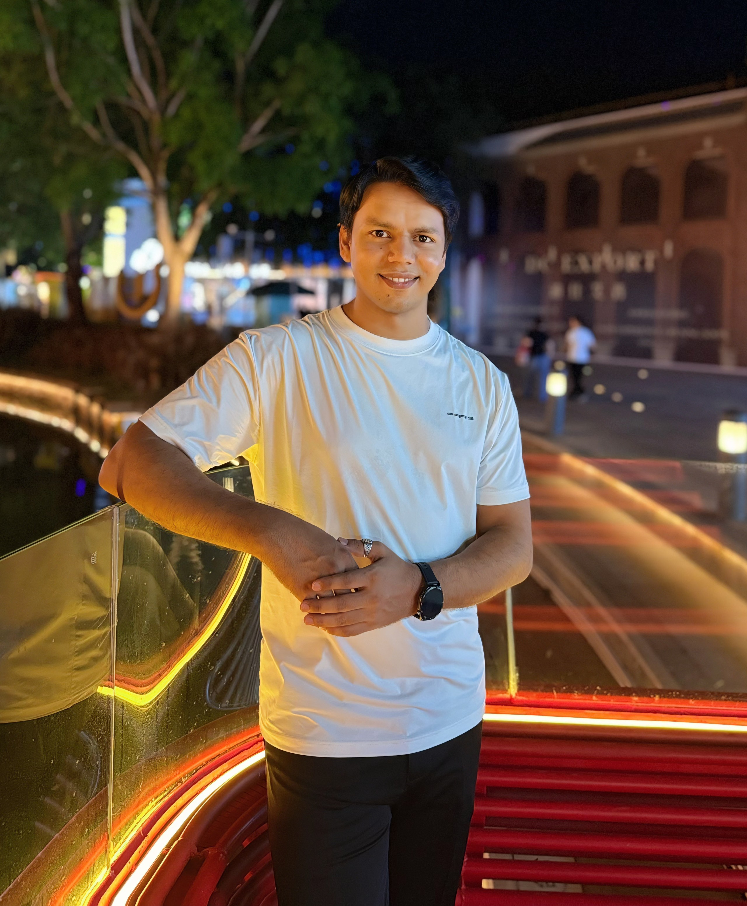

RESEARCHER • INTELLIGENT TRANSPORTATION & OBJECT DETECTION
Muhammad
Arslan Ghaffar
Affiliated Researcher at Shenzhen Institutes of Advanced Technology (SIAT), Chinese Academy of Sciences (CAS). Specializing in computer vision algorithms, real-time object detection, ADAS perception systems, and integrated UAV routing optimization.
Primary Email: ghaffar@siat.ac.cn
Secondary Email: arslan.g9@chd.edu.cn
120+
Citations
4+
Publications
SIAT / CAS
Affiliation
ACADEMIC PROFILE
RESEARCH PORTFOLIO
2026
Citations: 3
YOLO-Night: Lighting the Path for Autonomous Vehicles with Robust Nighttime Perception
J Tian, MA Ghaffar, Z Li
Sensors 26 (4), 1138
2024
Citations: 48
Vehicle-UAV Integrated Routing Optimization Problem for Emergency Delivery of Medical Supplies
Muhammad Arslan Ghaffar, Lei Peng*, Muhammad Umer Aslam
Electronics 13 (18)
2023
Citations: 57
Deep Learning Perception Optimization in Intelligent Transportation
Muhammad Arslan Ghaffar et al.
Electronics 12 (5), 1079
2023
Citations: 9
A traffic sign recognition algorithm for ADAS based on CNN for complex scenarios
MA Ghaffar, Z Li, T Chen, SA Haider, M Pokharel, S Hanifi, N Subedi
7th International Conference on Transportation Information and Safety (ICTIS)